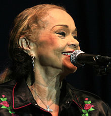
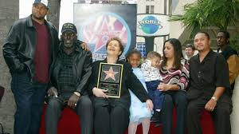

ETTA JAMES

Hawkins was born on January 25, 1938, in Los Angeles, California, to Dorothy Hawkins, who was 14 at the time. Although her father has never been identified,[6] James speculated that she was the daughter of pool player Rudolf "Minnesota Fats" Wanderone, whom she met briefly in 1987.[7] Her mother was frequently absent from their apartment in Watts, conducting relationships with various men, and James lived with a series of foster parents, most notably "Sarge" and "Mama" Lu. James referred to her mother as "the Mystery Lady".
Birth name: Jamesetta Hawkins
Born:January 25, 1938 Los Angeles, California, U.S.
Died:January 20, 2012 (aged 73)Riverside, California, U.S.
ALBUMS:
At Last! (1960),
The Second Time Around (1961),
Etta James (1962),
Etta James Sings for Lovers (1962),
Etta James Top Ten (1963),
The Queen of Soul (1965),
Call My Name (1966),
Tell Mama (1968),
Etta James Sings Funk (1970),
Losers Weepers (1971),
Etta James (1973),
Come a Little Closer (1974),
Etta Is Betta Than Evvah! (1976),
Deep in the Night (1978),
Changes (1980),
Seven Year Itch (1989),
Stickin' to My Guns (1990),
The Right Time (1992),
Mystery Lady: Songs of Billie Holiday (1994),
Time After Time (1995),
Love's Been Rough on Me (1997),
Life, Love & the Blues (1998),
Heart of a Woman (1999),
Matriarch of the Blues (2000),
Blue Gardenia (2001),
Let's Roll (2003),
Blues to the Bone (2004),
All the Way (2006),
The Dreamer (2011)

AWARDS:
From 1989, James received over 30 awards and recognitions from eight different organizations, including the Rock and Roll Hall of Fame and Museum[58] and the National Academy of Recording Arts and Sciences which organizes the Grammys.
In 1989, the newly formed Rhythm and Blues Foundation included James in their first Pioneer Awards for artists whose "lifelong contributions have been instrumental in the development of Rhythm and Blues music". The following year, 1990, she received an NAACP Image Award, which is given for "outstanding achievements and performances of people of color in the arts";[61] an award she cherished as it "was coming from my own people".
In 1993, James was inducted into the Rock and Roll Hall of Fame
In 2001, James was inducted into the Rockabilly Hall of Fame
In 2003, James received a star on the Hollywood Walk of Fame at 7080 Hollywood Blvd
In 2005, James was inducted into Hollywood's Rockwalk
In 2006, James received the Billboard R and B Founders Award